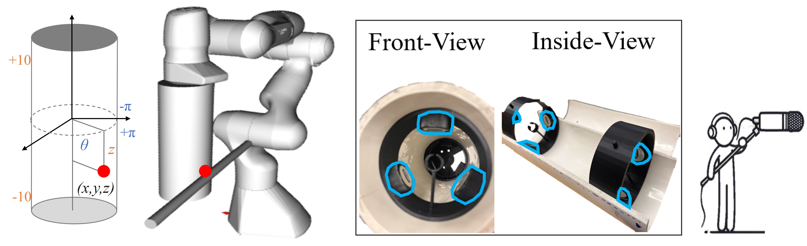
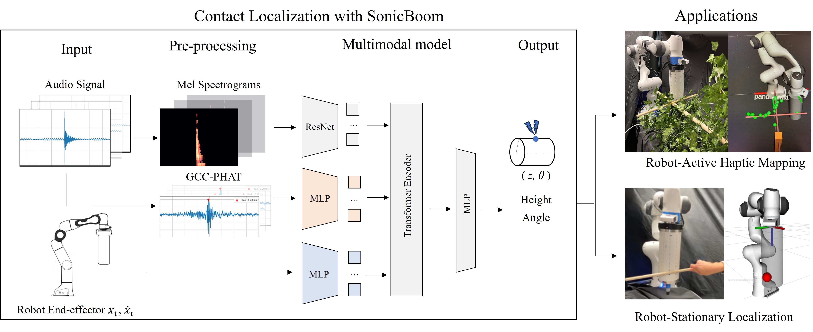
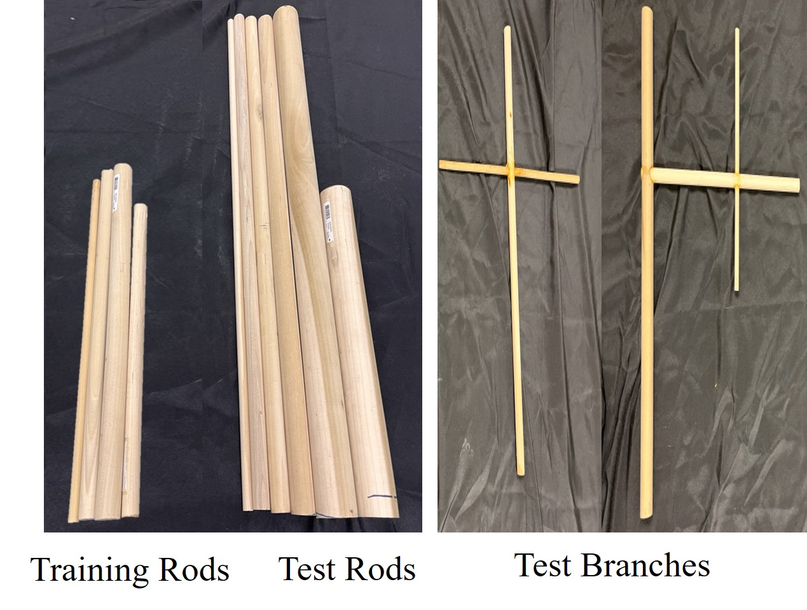
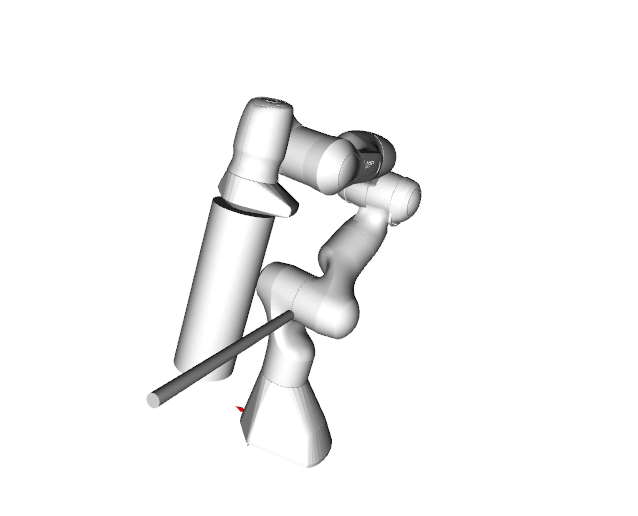
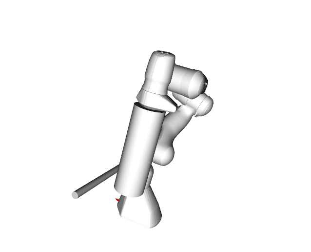
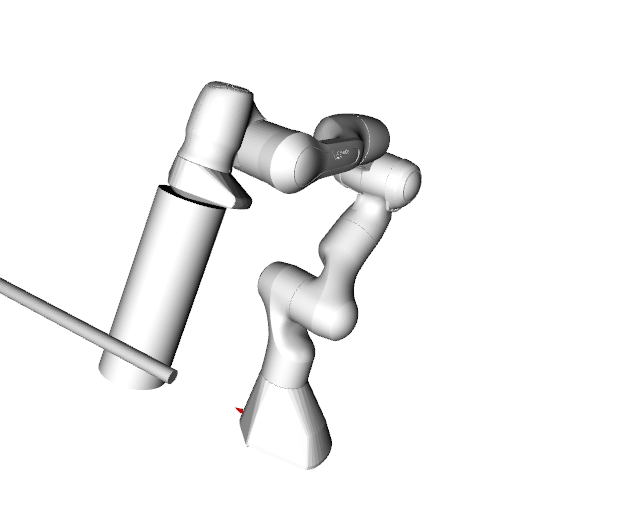
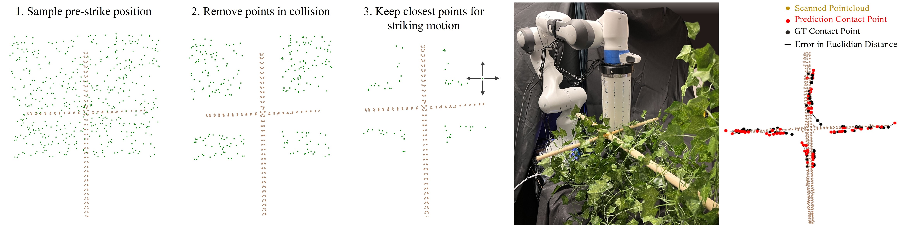
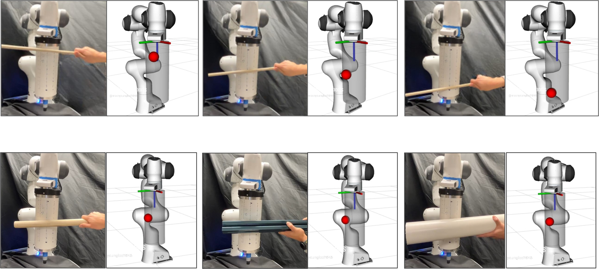

Contact point estimation using acoustic signals - prediction point (red)
Haptic mapping using SonicBoom to locate the rigid object - estimated occupancy (green)
Abstract
In cluttered environments where visual sensors
encounter heavy occlusion, such as in agricultural settings,
tactile signals can provide crucial spatial information for the
robot to locate rigid objects and maneuver around them. We
introduce SonicBoom, a holistic hardware and learning pipeline
that enables contact localization through an array of contact
microphones. While conventional sound source localization methods
effectively triangulate sources in air, localization through
solid media with irregular geometry and structure presents
challenges that are difficult to model analytically. We address this
challenge through a feature-engineering and learning-based approach,
autonomously collecting 18,000 robot interaction-sound
pairs to learn a mapping between acoustic signals and collision
locations on the robot end-effector link. By leveraging relative
features between microphones, SonicBoom achieves localization
errors of 0.43cm for in-distribution interactions and maintains
robust performance of 2.22cm error even with novel objects
and contact conditions. We demonstrate the system’s practical
utility through haptic mapping of occluded branches in mock
canopy settings, showing that acoustic-based sensing can enable
reliable robot navigation in visually challenging environments.
Video
SonicBoom Hardware
SonicBoom end-effector design consists of a 4” x 12” (radius x height) PVC pipe housing six piezoelectric contact microphones. The end-effector resembles a boom microphone
commonly used in film or TV production, inspiring the naming of SonicBoom. Inside the end-effector are two rings of three microphones each, positioned at both ends of the
tube.
The contact surface can be parameterized in a 2D space defined by height z and azimuth angle θ. The two-ring configuration provides overlapping
coverage regions for redundant sensing while extending the contact-aware surface along the entire length of the endeffector.

(Left) Contact point parameterized in cylindrical coordinate (Middle) Inside view of the end-effector housing 6 mics (Right) The name 'SonicBoom' is a pun on the boom microphone commonly used in audio recording.
Learning Audio Localization
Traditional sound source localization methods typically rely on analytical models assuming uniform propagation media like air or
elastomers. However, contact-based localization through robot structures presents unique challenges. Vibrations through non-uniform
structures like a robot end-effector-link exhibit complex behavior as signal propagates. Thus, we address this challenge through feature engineering and learning-based approach.
Mel Spectrogram capture the energy
distribution across frequency and time, but do
not explicitly encode the relative timing differences between
each microphone pairs that are crucial for localization.
GCC-PHAT Generalized Cross-Correlation with Phase
Transform (GCC-PHAT) explicitly computes similarity
between microphone pairs as a function of time-lag. This
representation improves robustness to noise and reverberation
by normalizing the cross-power spectrum to have unit
magnitude at all frequencies, GCC-PHAT emphasizes phase
alignment while being robust to amplitude variations between
microphones
Robot Proprioception provides a
strong prior for contact localization. The intuition is straightforward
yet effective: collision is likely to occur in the
direction of robot’s motion and highly unlikely on the opposite
side, particularly when interacting with static and inanimate
objects. We use one-second trajectory of the end-effector’s
pose and velocity.

System overview for contact localization in two settings. Each sensing modality is encoded into a latent feature before being fused by the
multi-sensory self-attention transformer encoder. The output prediction is represented in cylindrical coordinate z, θ along SonicBoom surface, which can be
used for haptic mapping or localization.
Dataset Generation
We employ an automated data collection pipeline using a Franka robot equipped with our SonicBoom end-effector, capturing acoustic signatures from various striking actions and beam objects in real-world collision data. Our dataset pairs six-channel audio signals and robot proprioceptive data with contact locations on the SonicBoom surface represented as (z, θ).
Robot striking wooden rod to collect collision sounds.

Training and test objects with varying dimension and geometric complexity.



Label for the contact point on the SonicBoom surface is obtained from post-processing the robot trajectory with meshes to determine the closest point of intersection.
Robot Experiments
We experiment with
SonicBoom’s practical utility through two settings: (1) robot-active haptic mapping in occluded
spaces inspired from robot arm reaching through cluttered branches in an agriculture setting, (2) robot-stationary localization where the human strikes various locations on SonicBoom surface to isolate the contribution of acoustic sensing from robot Proprioception.

(Left) To get contact trajectories, the robot employs a simple exploration motion based off the object's scanned pointcloud.
Pre-strike positions are sampled and filtered (green). For each remaining point, the robot strikes left,right,up,down in the x,y plane.
(Right) After many collisions, we obtain prediction of contact points (red).

Zero-shot evaluation for (top) novel contact event where human
strikes robot as opposed to robot striking the object, and (bottom) novel objects
with different material properties. Prediction points are shown in (red).